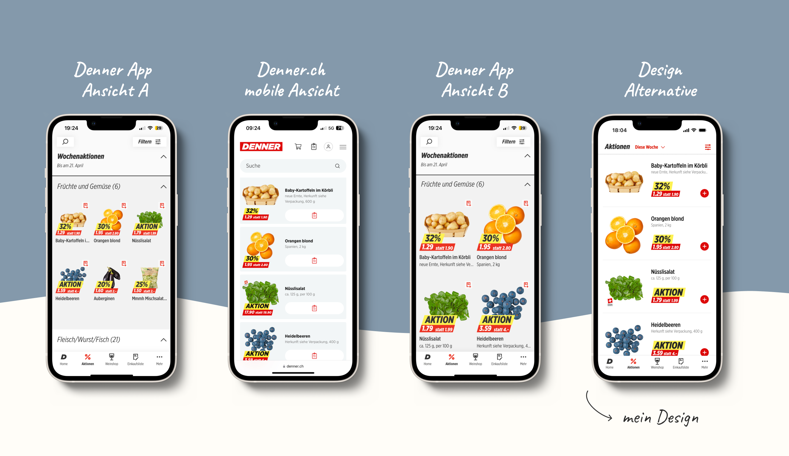
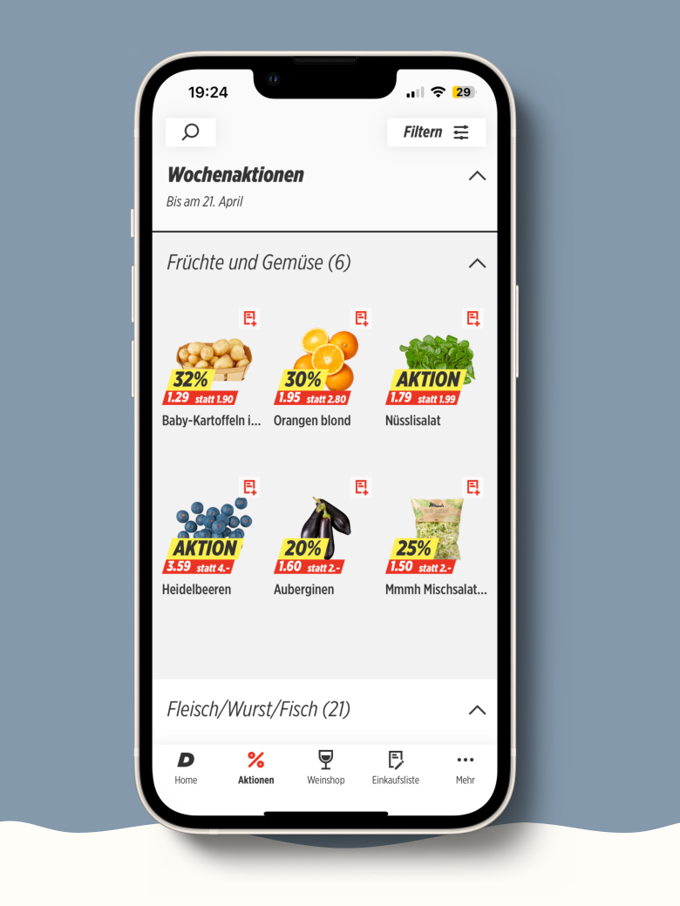
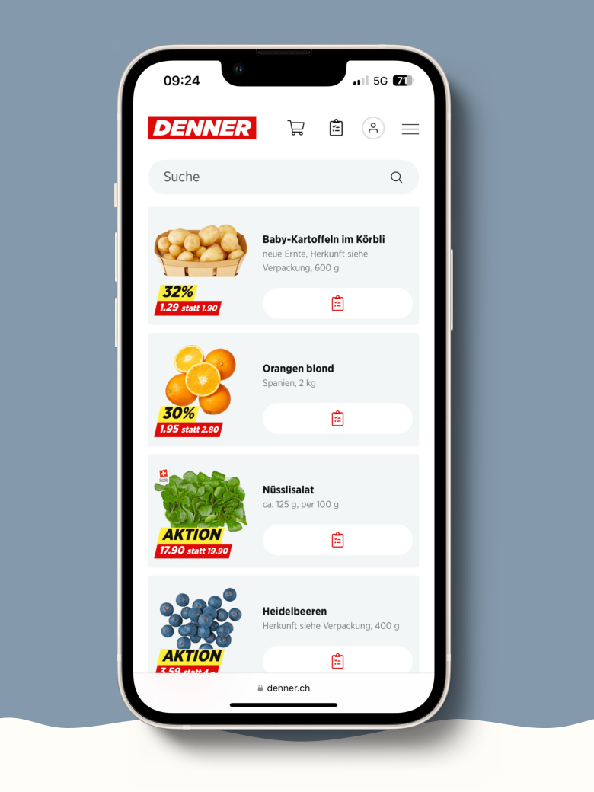
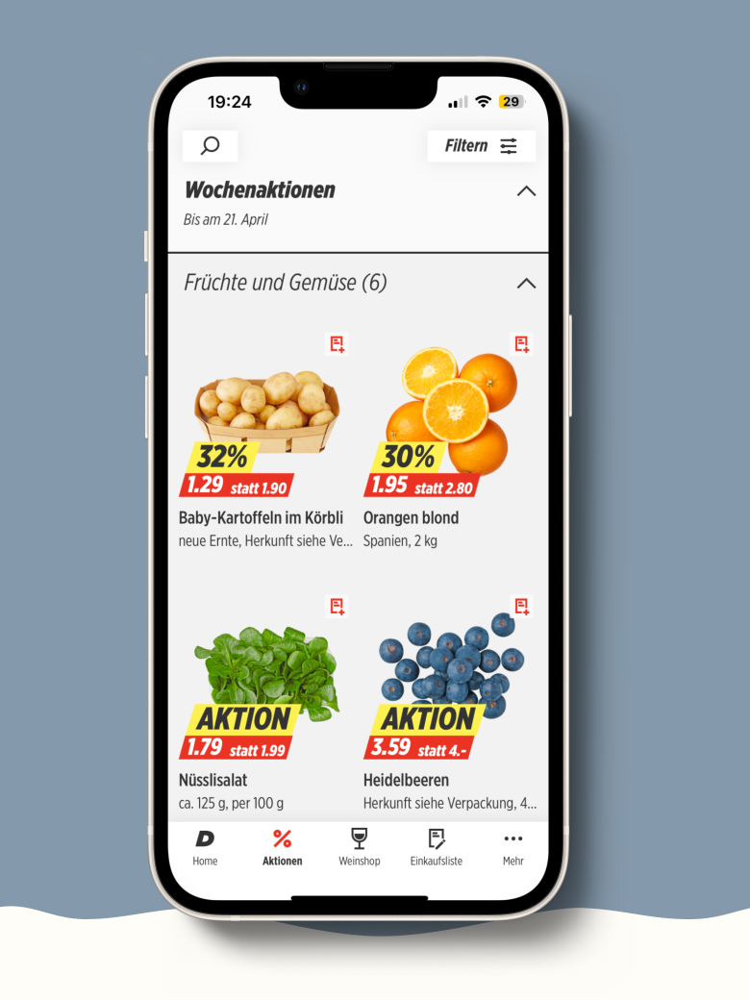
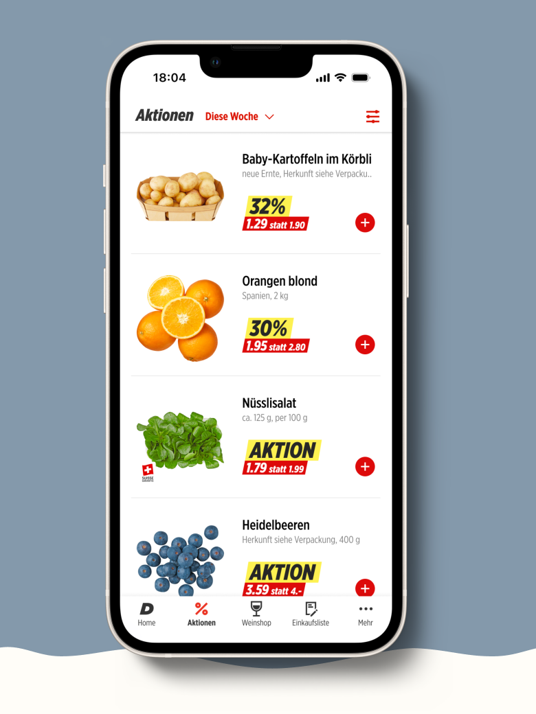

Im Austausch mit dem Product-Development-Team habe ich Research Questions definiert und priorisiert sowie Hypothesen für das Forschungsvorgehen formuliert.
Research Question:
Wie kann die Übersichtlichkeit der Denner App verbessert werden – und wird ein alternatives Design von Nutzerinnen und Nutzer auch tatsächlich als übersichtlicher wahrgenommen?
EXPLORE & TEST
Methodisches Vorgehen
Ich entwickelte ein neues High-Fidelity-Design in Figma, das gezielt optimiert auf:
visuelle Hierarchie,
Informationsdichte
und Navigationsklarheit
Quantitativer Designvergleich (Validierung)
Ich habe mit einer Bewertungsumfrage unter rund 2'000 aktiven Nutzern vier unterschiedliche Designs getestet und die Daten mithilfe einer ANOVA-Analyse und paarweiser T-Tests ausgewertet.
Getestete Designs & Ergebnis


Denner App Ansicht A

Denner.ch mobile Ansicht

Denner App Ansicht B

Meine erarbeitete Design Alternative
BeschreibungDesignMittelwertVarianz
Denner App Ansicht A3er Grid3.31.4
Denner.ch mobile AnsichtLandscape3.51.4
Denner App Ansicht B2er Grid3.71.1
Design AlternativeLandscape4.11.0
Denner App Ansicht A
Design3er Grid
Mittelwert3.3
Varianz1.4
Denner.ch mobile Ansicht
DesignLandscape
Mittelwert3.5
Varianz1.4
Denner App Ansicht B
Design2er Grid
Mittelwert3.7
Varianz1.1
Design Alternative
DesignLandscape
Mittelwert4.1
Varianz1.0
ANOVA: Signifikante Unterschiede zwischen den Designs festgestellt
F-Wert 162.1 > Fcrit 2.606
Paarweise T-Tests (mit Bonferroni-Korrektur):
P-Wert < 0.008
Das alternative Design ist signifikant besser als alle Vergleichsdesigns.
Entscheidung & Umsetzung
Auf Basis der klaren Ergebnisse entschied sich das Produktteam für:
Umsetzung des neuen Designs
Überführung in die Produktentwicklung
Messbarer Produkterfolg
Nach dem Go-Live wurde erneut eine CSAT-Umfrage durchgeführt:
Vor Redesign: 58%
Nach Redesign: 86% → +26% Steigerung
Bestätigung, dass bessere Übersichtlichkeit direkt auf die Nutzerzufriedenheit einzahlt.
Beispiel für eine datenbasierte UX-Entscheidung mit messbarem Business-Value